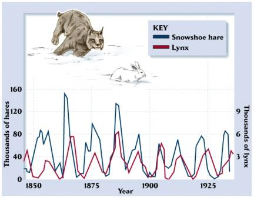
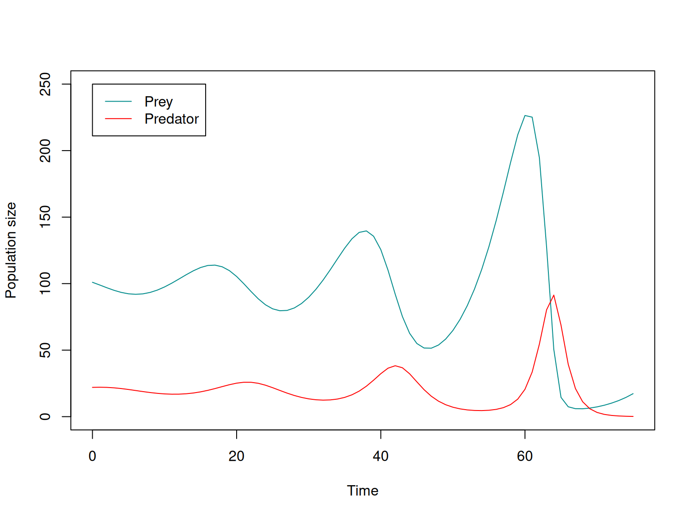
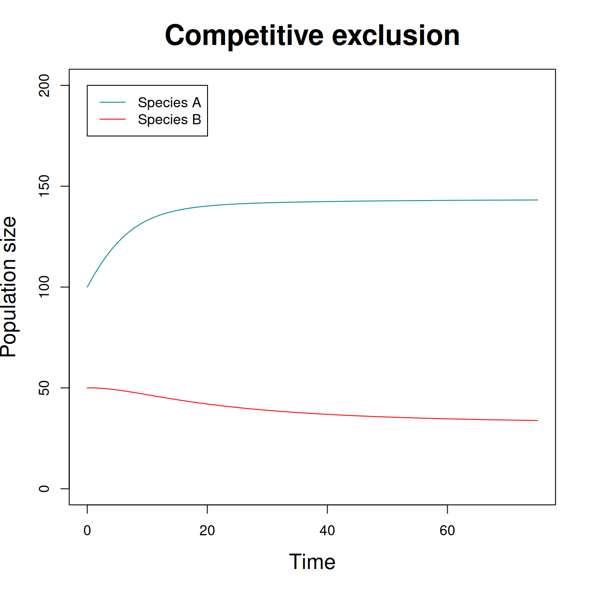
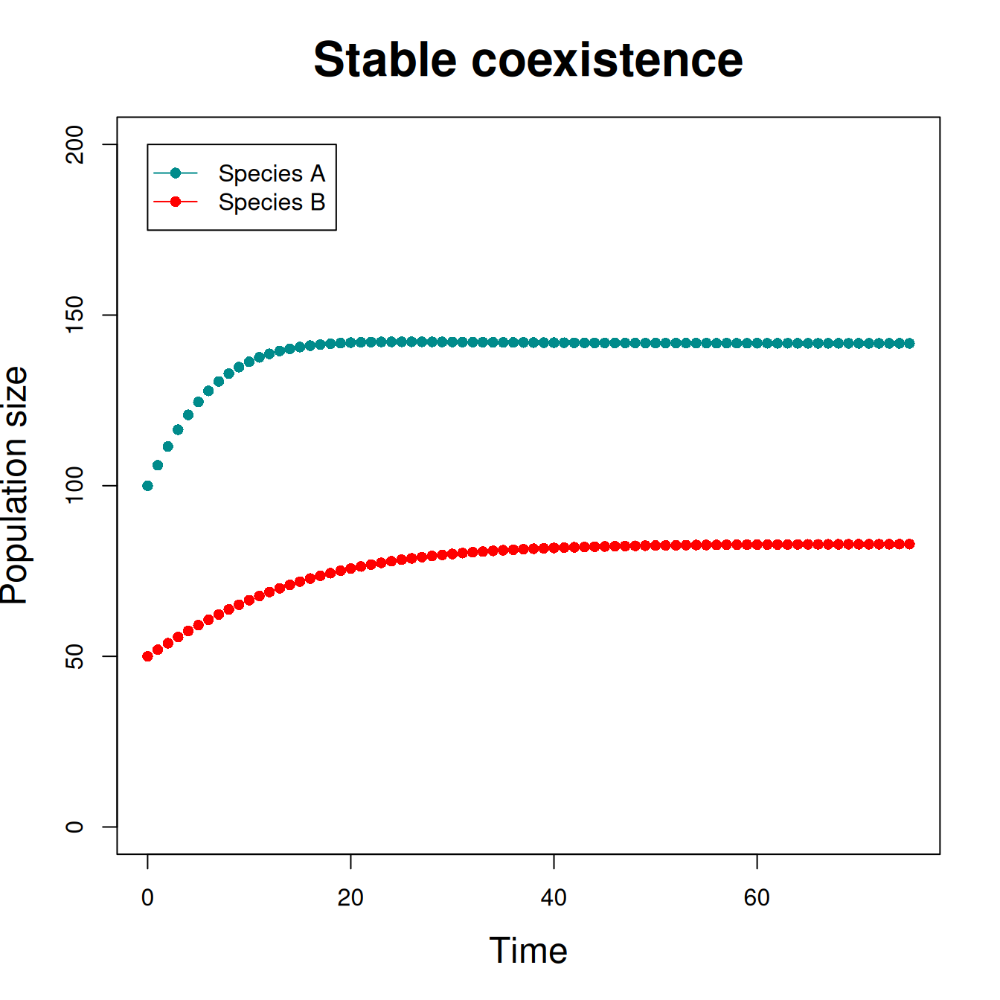

Models of interspecific interactions
Predator-prey dynamics and competition
Lotka and Volterra developed models for both predator-prey dynamics and competitive interactions.
As usual, these models were developed as continuous-time models.
We will focus on discrete-time versions (\(t = 1, 2, \ldots\)).
We will ignore potential extensions with stochasticity, age structure, spatial structure, etc…

Model for prey \[ N^{prey}_{t+1} = N^{prey}_t + N^{prey}_t (r^{prey} - k^{pred} N^{pred}_t) \]
Model for predator \[ N^{pred}_{t+1} = N^{pred}_t + N^{pred}_t (b^{pred}N^{prey}_t - d^{pred}) \]
Equilibrium for prey occurs when: \[ N^{pred} = \frac{r^{prey}}{k^{pred}} \]
Equilibrium for predators occurs when \[ N^{prey} = \frac{d^{pred}}{b^{pred}} \]
However, it is rare that both equilibrium conditions will be met at the same time, and so the populations will cycle.

Model for species A \[ N^A_{t+1} = N^A_t + r^A N^A_t(K^A - N^A_t - \alpha^B N^B_t) / K^A \]
Model for species B \[ N^B_{t+1} = N^B_t + r^B N^B_t(K^B - N^B_t - \alpha^A N^A_t) / K^B \]
Equilibrium for species A \[ N^A = \frac{K^A - \alpha^B K^B}{1 - \alpha^A \alpha^B} \]
Equilibrium for species B \[ N^B = \frac{K^B - \alpha^A K^A}{1 - \alpha^A \alpha^B} \]
Three posssible outcomes:
Competitive exclusion principle Two species with the same niche cannot coexist on the same limiting resource.


Predator-prey model is extension of geometric growth
Competition model is extension of logistic growth
These models could be extended to include: